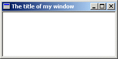

[ contents
| #winprog
]
A Simple Window
Example: simple_window

Sometimes people come on IRC and ask "How do I make a window?"...Well it's not
entirely that simple I'm afraid. It's not difficult once you know what you're
doing but there are quite a few things you need to do to get a window to show up; And
they're more than can be simply explained over a chat room, or a quick note.
I always liked to do things first and learn them later...so here is the code to
a simple window which will be explained shortly.
#include <windows.h>
const char g_szClassName[] = "myWindowClass";
// Step 4: the Window Procedure
LRESULT CALLBACK WndProc(HWND hwnd, UINT msg, WPARAM wParam, LPARAM lParam)
{
switch(msg)
{
case WM_CLOSE:
DestroyWindow(hwnd);
break;
case WM_DESTROY:
PostQuitMessage(0);
break;
default:
return DefWindowProc(hwnd, msg, wParam, lParam);
}
return 0;
}
int WINAPI WinMain(HINSTANCE hInstance, HINSTANCE hPrevInstance,
LPSTR lpCmdLine, int nCmdShow)
{
WNDCLASSEX wc;
HWND hwnd;
MSG Msg;
//Step 1: Registering the Window Class
wc.cbSize = sizeof(WNDCLASSEX);
wc.style = 0;
wc.lpfnWndProc = WndProc;
wc.cbClsExtra = 0;
wc.cbWndExtra = 0;
wc.hInstance = hInstance;
wc.hIcon = LoadIcon(NULL, IDI_APPLICATION);
wc.hCursor = LoadCursor(NULL, IDC_ARROW);
wc.hbrBackground = (HBRUSH)(COLOR_WINDOW+1);
wc.lpszMenuName = NULL;
wc.lpszClassName = g_szClassName;
wc.hIconSm = LoadIcon(NULL, IDI_APPLICATION);
if(!RegisterClassEx(&wc))
{
MessageBox(NULL, "Window Registration Failed!", "Error!",
MB_ICONEXCLAMATION | MB_OK);
return 0;
}
// Step 2: Creating the Window
hwnd = CreateWindowEx(
WS_EX_CLIENTEDGE,
g_szClassName,
"The title of my window",
WS_OVERLAPPEDWINDOW,
CW_USEDEFAULT, CW_USEDEFAULT, 240, 120,
NULL, NULL, hInstance, NULL);
if(hwnd == NULL)
{
MessageBox(NULL, "Window Creation Failed!", "Error!",
MB_ICONEXCLAMATION | MB_OK);
return 0;
}
ShowWindow(hwnd, nCmdShow);
UpdateWindow(hwnd);
// Step 3: The Message Loop
while(GetMessage(&Msg, NULL, 0, 0) > 0)
{
TranslateMessage(&Msg);
DispatchMessage(&Msg);
}
return Msg.wParam;
}
For most part this is the simplest windows program you can write that actually
creates a functional window, a mere 70 or so lines. If you got the first example
to compile then this one should work with no problems.
Step 1: Registering the Window Class
A Window Class stores information about a type of window, including it's
Window Procedure which controls the window, the small and large icons for the
window, and the background color. This way, you can register a class once, and create
as many windows as you want from it, without having to specify all those attributes over
and over. Most of the attributes you set in the window class can be changed on a per-window
basis if desired.
A Window Class has NOTHING to do with C++ classes.
const char g_szClassName[] = "myWindowClass";
The variable above stores the name of our window class, we will use it shortly
to register our window class with the system.
WNDCLASSEX wc;
wc.cbSize = sizeof(WNDCLASSEX);
wc.style = 0;
wc.lpfnWndProc = WndProc;
wc.cbClsExtra = 0;
wc.cbWndExtra = 0;
wc.hInstance = hInstance;
wc.hIcon = LoadIcon(NULL, IDI_APPLICATION);
wc.hCursor = LoadCursor(NULL, IDC_ARROW);
wc.hbrBackground = (HBRUSH)(COLOR_WINDOW+1);
wc.lpszMenuName = NULL;
wc.lpszClassName = g_szClassName;
wc.hIconSm = LoadIcon(NULL, IDI_APPLICATION);
if(!RegisterClassEx(&wc))
{
MessageBox(NULL, "Window Registration Failed!", "Error!",
MB_ICONEXCLAMATION | MB_OK);
return 0;
}
This is the code we use in WinMain() to register our window class.
We fill out the members of a WNDCLASSEX structure and call
RegisterClassEx().
The members of the struct affect the window class as follows:
cbSize- The size of the structure.
style- Class Styles (
CS_*), not to be confused with Window Styles (WS_*) This can usually be set to 0.
lpfnWndProc- Pointer to the window procedure for this window class.
cbClsExtra- Amount of extra data allocated for this class in memory. Usually
0.
cbWndExtra- Amount of extra data allocated in memory per window of this type. Usually
0.
hInstance- Handle to application instance (that we got in the first parameter of
WinMain()).
hIcon- Large (usually 32x32) icon shown when the user presses Alt+Tab.
hCursor- Cursor that will be displayed over our window.
hbrBackground- Background Brush to set the color of our window.
lpszMenuName- Name of a menu resource to use for the windows with this class.
lpszClassName- Name to identify the class with.
hIconSm- Small (usually 16x16) icon to show in the taskbar and in the top left corner of the window.
Don't worry if that doesn't make much sense to you yet, the various parts that
count will be explained more later. Another thing to remember is to not try
and remember this stuff. I rarely (never) memorize structs, or function parameters,
this is a waste of effort and, more importantly, time. If you know the functions you need
to call then it is a matter of seconds to look up the exact parameters in your
help files. If you don't have help files, get them. You are lost without.
Eventually you will come to know the parameters to the functions you use most.
We then call RegisterClassEx() and check for failure, if it fails we pop up a message
which says so and abort the program by returning from the WinMain() function.
Step 2: Creating the Window
Once the class is registered, we can create a window with it. You should look
up the paramters for CreateWindowEx() (as you should ALWAYS do when using a new API call),
but I'll explain them briefly here.
HWND hwnd;
hwnd = CreateWindowEx(
WS_EX_CLIENTEDGE,
g_szClassName,
"The title of my window",
WS_OVERLAPPEDWINDOW,
CW_USEDEFAULT, CW_USEDEFAULT, 240, 120,
NULL, NULL, hInstance, NULL);
The first parameter (WS_EX_CLIENTEDGE) is the extended windows style, in this
case I have set it to give it a sunken inner border around the window. Set it
to 0 if you'd like to see the difference. Also play with other values to
see what they do.
Next we have the class name (g_szClassName), this tells the system what kind
of window to create. Since we want to create a window from the class we just registered,
we use the name of that class. After that we specify our window name or title
which is the text that will be displayed in the Caption, or Title Bar on our window.
The parameter we have as WS_OVERLAPPEDWINDOW is the Window Style parameter.
There are quite a few of these and you should look them up and experiment to
find out what they do. These will be covered more later.
The next four parameters (CW_USEDEFAULT, CW_USEDEFAULT, 320, 240) are the
X and Y co-ordinates for the top left corner of your window, and the width
and height of the window. I've set the X and Y values to CW_USEDEFAULT
to let windows choose
where on the screen to put the window. Remeber that the left of the screen is an
X value of zero and it increases to the right; The top of the screen is a Y value
of zero which increases towards the bottom. The units are pixels, which is
the smallest unit a screen can display at a given resolution.
Next (NULL, NULL, g_hInst, NULL) we have the Parent Window handle,
the menu
handle, the application instance handle, and a pointer to window creation data.
In windows, the windows on your screen are arranged in a heirarchy of parent and child
windows. When you see a button on a window, the button is the Child and it is contained within
the window that is it's Parent.
In this example, the parent handle is NULL because we have no parent, this is our main or Top Level window.
The menu is NULL for now since we don't have one yet. The instance handle is
set to the value that is passed in as the first parameter to WinMain(). The
creation data (which I almost never use) that can be used to send additional data to the
window that is being created is also NULL.
If you're wondering what this magic NULL is, it's simply defined as 0
(zero). Actually, in C it's defined as ((void*)0), since it's intended for
use with pointers. Therefore you will possibly get warnings if you use NULL for integer
values, depending on your compiler and the warning level settings. You can choose to ignore
the warnings, or just use 0 instead.
Number one cause of people not knowing what the heck is wrong with their programs is probably
that they didn't check the return values of their calls to see if they failed or not.
CreateWindow() will fail at some point even if you're an experianced
coder, simply because there are lots of mistakes that are easy to make. Untill you learn
how to quickly identify those mistakes, at least give yourself the chance of figuring out
where things go wrong, and Always check return values!
if(hwnd == NULL)
{
MessageBox(NULL, "Window Creation Failed!", "Error!",
MB_ICONEXCLAMATION | MB_OK);
return 0;
}
After we've created the window and checked to make sure we have a valid handle
we show the window, using the last parameter in WinMain() and then update it to
ensure that it has properly redrawn itself on the screen.
ShowWindow(hwnd, nCmdShow);
UpdateWindow(hwnd);
The nCmdShow parameter is optional, you could simply pass in SW_SHOWNORMAL
all the time and be done with it. However using the parameter passed into WinMain() gives
whoever is running your program to specify whether or not they want your window to start off
visible, maximized, minimized, etc... You will find options for these in the properties of
windows shortcuts, and this parameter is how the choice is carried out.
Step 3: The Message Loop
This is the heart of the whole program, pretty much everything that your program does
passes through this point of control.
while(GetMessage(&Msg, NULL, 0, 0) > 0)
{
TranslateMessage(&Msg);
DispatchMessage(&Msg);
}
return Msg.wParam;
GetMessage() gets a message from your application's message queue. Any time the user
moves the mouse, types on the keyboard, clicks on your window's menu, or does any
number of other things, messages are generated by the system and entered into your
program's message queue. By calling GetMessage() you are requesting the next
available message to be removed from the queue and returned to you for processing. If there
is no message, GetMessage() Blocks. If you are unfamiliar with the term, it
means that it waits untill there is a message, and then returns it to you.
TranslateMessage() does some additional processing on keyboard
events like generating WM_CHAR messages to go along with WM_KEYDOWN messages.
Finally DispatchMessage() sends the message out to the window that the
message was sent to. This could be our main window or it could be another one, or a control,
and in some cases a window that was created behind the scenes by the sytem or another program.
This isn't something you need to worry about because all we are concerned with is that
we get the message and send it out, the system takes care of the rest making sure it
gets to the proper window.
Step 4: the Window Procedure
If the message loop is the heart of the program, the window procedure is the brain.
This is where all the messages that are sent to our window get processed.
LRESULT CALLBACK WndProc(HWND hwnd, UINT msg, WPARAM wParam, LPARAM lParam)
{
switch(msg)
{
case WM_CLOSE:
DestroyWindow(hwnd);
break;
case WM_DESTROY:
PostQuitMessage(0);
break;
default:
return DefWindowProc(hwnd, msg, wParam, lParam);
}
return 0;
}
The window procedure is called for each message, the HWND parameter is
the handle of your window, the one that the message applies to. This is important
since you might have two or more windows of the same class and they will use the
same window procedure (WndProc()). The difference is that the parameter
hwnd will be different depending on which window it is. For example when
we get the WM_CLOSE message we destroy the window. Since we use the window handle
that we received as the first paramter, any other windows will not be affected, only the
one that the message was intended for.
WM_CLOSE is sent when the user presses the Close Button
![[x]](images/button_close.gif) or types Alt-F4. This will cause the window
to be destroyed by default, but I like to handle it explicitly, since this is the perfect
spot to do cleanup checks, or ask the user to save files etc. before exiting the program.
or types Alt-F4. This will cause the window
to be destroyed by default, but I like to handle it explicitly, since this is the perfect
spot to do cleanup checks, or ask the user to save files etc. before exiting the program.
When we call DestroyWindow() the system sends the WM_DESTROY
message to the window getting destroyed, in this case it's our window, and then destroys
any remaining child windows before finally removing our window from the system. Since this
is the only window in our program, we are all done and we want the program to exit, so we
call PostQuitMessage(). This posts the WM_QUIT message to the
message loop. We never receive this message, because it causes GetMessage()
to return FALSE, and as you'll see in our message loop code, when that happens
we stop processing messages and return the final result code, the wParam of
WM_QUIT which happens to be the value we passed into PostQuitMessage().
The return value is only really useful if your program is designed to be called by another program
and you want to return a specific value.
Step 5: There is no Step 5
Phew. Well that's it! If I haven't explained stuff clearly enough yet, just
hang in there and hopefully things will become more clear as we get into more
usefull programs.
Copyright © 1998-2003, Brook Miles (theForger). All rights reserved.